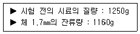
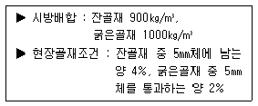
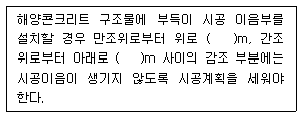
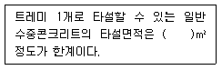
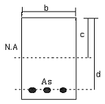

콘크리트산업기사 (2007-08-05 기출문제)
1과목: 콘크리트재료 및 배합
1. 다음 혼화재중 잠재수경성인 것은?
- 고로슬래그
- 슬리카 퓸
- 플라이애시
- 왕겨재
(정답률: 알수없음)

2. 플라이애쉬에 대한 설명 중 잘못된 것은?
- 볼베어링 작용에 의해 콘크리트의 워커빌리티를 개선한다.
- 콘크리트의 발열을 저감시키기 때문에 매스콘크리트에 유리하다.
- 플라이애쉬는 함유탄소분의 일부가 AE제를 흡착하는 성질을 가지고 있어 소요의 공기량을 얻기 위해서는 AE제의 양이 많이 요구되는 경우가 있다.
- 장기에 걸친 포졸란 반응에 의해 콘크리트의 수밀성은 향상되지만, 건조수축은 증가하는 경향이 있다.
(정답률: 알수없음)
3. 다음 중 양질의 골재로서 갖추어야 할 조건이 아닌 것은?
- 조직이 치밀하고 강하며 공극률이 적은 것
- 구형이며 단위용적중량이 큰 것
- 조립률이 높으며 마모에 강한 것
- 비중이 높으며 흡수율이 낮은 것
(정답률: 69%)
4. 실제 사용한 콘크리트의 31회 압축강도 시험으로부터 압축강도(MPa) 찬차의 제곱을 구하여 합한 값이 270 이었다. 콘크리트의 배합강도를 결정하기 위한 압축강도의 표준편차를 구하면? (단, 콘크리트 표준시방서에 의한다.)
- 2.85 MPa
- 2.90 MPa
- 2.95 MPa
- 3.00 MPa
(정답률: 알수없음)
5. 콘크리트 표준 시방서에 의한 다음 조건에서의 배합강도(MPa)로 가장 적합한 것은? (단, fck = 27 MPa, 30회 이상 압축강도 시험에 의한 표준편차 S = 2.7 MPa 이다.)
- 28.0
- 29.0
- 30.0
- 31.0
(정답률: 알수없음)
6. 시멘트 클링커 주요광물의 특성에 관하여 옳지 않은 것은?
- C3A는 수화열이 높다.
- C2S는 장기강도가 높다.
- C3S는 수화열이 낮다.
- C4AF는 화학저항성이 높다.
(정답률: 알수없음)
7. 콘크리트 배합에 있어서 단위수량이 170㎏/m3, 단위 시멘트량이 315㎏/m3, 공기량이 4%일 때 단위 골재량의 절대 체적은? (단, 시멘트의 비중은 3.14 이다.)
- 0.69 m3
- 0.73 m3
- 0.75 m3
- 0.77 m3
(정답률: 알수없음)
8. 골재의 입형에 대한 설명 중 옳지 않은 것은?
- 실적율이 작으면 시멘트페이스트량이 증가되어 비경제적인 콘크리트가 된다.
- 골재의 입형이 나쁘면 작업성을 좋게 하기 위하여 단위수량 및 시멘트량이 증가된다.
- 골재의 실적율이 증가하면 콘크리트의 유동성도 증가한다.
- 부순 자갈은 입형이 나쁘기 때문에 콘크리트 강도면 에서 상당히 불리하다.
(정답률: 알수없음)
9. 그라우팅용 혼화제의 특징으로 적절하지 않은 것은
- 블리딩을 적게 한다.
- 그라우트를 수축시킨다.
- 재료분리가 적어야 한다.
- 주입하기 용이하여야한다.
(정답률: 알수없음)
10. 시멘트의 응결시험 장치로 짝지어진 것은?
- 길모어 침장치 Vicat 침 장치
- 오토클레이브 장치, 길이변화 몰드
- 흐름 시험기, 비중병
- 비중용기, LA 마모시험기
(정답률: 알수없음)
11. 콘크리트 배합계산에 고려해야 하며 시멘트 질량의 5%이상 사용하는 재료가 아닌 것은?
- 화산재
- 플라이애시
- 규산질 미분말
- 방수제
(정답률: 알수없음)
12. KS L 5201에 규정된 포틀랜드 시멘트의 종류가 아닌 것은?
- 보통포틀랜드 시멘트
- 조강포틀랜드 시멘트
- 포틀랜트포졸란 시멘트
- 중용열포틀랜드 시멘트
(정답률: 55%)
13. 다음 중 골재에 관련된 일반적인 시험이 아닌 것은?
- 체가름 시험
- 밀도 및 흡수율시험
- 압축강도시험
- 안정성시험
(정답률: 알수없음)
14. 포틀랜드시멘트의 풍화에 대한 설명으로 옳지 않는 것은?
- 풍화된 시멘트는 비중이 감소한다.
- 분말도가 큰 시멘트는 풍화되기 쉽다.
- 풍화된 시멘트를 사용한 콘크리트는 초기강도가 증가한다.
- 풍화된 시멘트는 강열감량이 증가한다.
(정답률: 알수없음)
15. 굵은 골재의 마모시험 결과가 아래 표와 같을 때 이 굵은 골재의 마모율은?

- 3.2 %
- 5.6 %
- 6.2 %
- 7.2 %
(정답률: 알수없음)
16. 시방배합의 단위량과 현장골재의 입도가 다음과 같을 때, 현장배합의 단위굵은골재 및 단위잔골재량을 계산하여 나타낸 값으로 옳은 것은?

- 잔골재량 = 917 ㎏/m3, 굵은골재량 = 987 ㎏/m3
- 잔골재량 = 940 ㎏/m3, 굵은골재량 = 960 ㎏/m3
- 잔골재량 = 883 ㎏/m3, 굵은골재량 = 1017 ㎏/m3
- 잔골재량 = 880 ㎏/m3, 굵은골재량 = 1020 ㎏/m3
(정답률: 알수없음)
17. 잔골재의 밀도 및 흡수율시험방법에 대한 설명으로 잘못된 것은?
- 시료는 대표적인 것을 채취하고, 사분법 또는 시료분취기에 의해, 약 1Kg의 잔골재를 채취한다.
- 시험용 플라스크의 검정된 용량을 나타내는 눈금까지의 용적은 시료를 넣는 데 필요한 용적의 1.5배 이상 3배미만으로 한다.
- 표면건조 포화상태의 시료를 확인할 때는 시료를 원뿔형몰드에 2층으로 나누어 넣고 다짐봉으로 각 층을 25회씩 다진 뒤 몰드를 수직으로 빼 올린다.
- 시험 시 플라스크, 시료 및 물의 질량은 0.1g 정밀도로 칭량하며, 측정값은 밀도시험일 경우는 2회 시험의 차가 0.01g/cm3 이하 이어야 한다.
(정답률: 알수없음)
18. 철근의 인장시험에 의하여 구할 수 있는 기계적 특성 값이 아닌 것은?
- 연신율
- 단면수축률
- 내력
- 취성파면율
(정답률: 알수없음)
19. 다음의 시멘트 중에서 일반적으로 강도발현이 가장 빠른 것은?
- 보통포틀랜드시멘트
- 조강포틀랜드시멘트
- 고로슬래그시멘트
- 알루미나시멘트
(정답률: 알수없음)
20. 콘크리트 배합강도 결정시 고려하는 표준편차에 대한 설명 중 틀린 것은?
- 콘크리트 압축강도의 표준편차는 100회 이상의 시험결과로부터 추정한 표준편차를 사용하는 것이 바람직하다.
- 콘크리트 압축강도의 표준편차는 실제 사용한 콘크리트의 30회 이상의 실험실적으로 결정하는 것을 원칙으로 한다.
- 콘크리트 압축강도의 표준편차는 해당 현장의 품질관리 수준에 다라 다르므로 반드시 공사 착공 초기에 구하여 적용하는 것이 원칙이다.
- 콘크리트 압축강도 시험횟수가 25인 경우 콘크리트 압축강도의 표준편차는 보정계수 1.16을 곱하여 수정하여야한다.
(정답률: 64%)
2과목: 콘크리트제조, 시험 및 품질관리
21. 골재와 알칼리-실리카 반응을 검토하기 위하여 적합한 시험은 어느 것인가?
- 질산은 적정법
- 전자파 레이더법
- 모르타르봉 방법
- 변색법
(정답률: 39%)
22. 굳지 않은 콘크리트의 성질을 알아보는 시험방법이 아닌 것은?
- 응결시간 시험
- 공기량 시험
- 슬럼프 시험
- 슈미트 해머에 의한 반발경도 시험
(정답률: 알수없음)
23. 콘크리트의 블리딩에 관한 설명으로 틀린 것은?
- 콘크리트의 블리딩은 일종의 재료분리 현상이다.
- 잔골재율이 클수록 블리딩이 작다.
- 시멘트의 분말도가 클수록 블리딩이 증가한다.
- 일정 범위 내에서 공기량이 많을수록 블리딩이 감소한다.
(정답률: 알수없음)
24. 콘크리트 구조물의 검사 중 표면상태의 검사항목에 해당되지 않는 것은?
- 시공이음
- 균열
- 양생방법
- 노출면의 상태
(정답률: 70%)
25. 콘크리트 1m3을 만드는데 필요한 시멘트량이 358 ㎏/m3 이고, 물-시멘트비가 50% 일 때 단위수량은 얼마인가?
- 179 ㎏/m3
- 716 ㎏/m3
- 358 ㎏/m3
- 90 ㎏/m3
(정답률: 50%)
26. KS F 4009에 규정되어 있는 레디믹스트 콘크리트 혼합에 사용되는 물에 대한 설명으로 옳지 않은 것은?
- 상수돗물은 시험을 하지 않아도 사용할 수 있다.
- 상수돗물 이외의 물을 사용한 경우 모르타르의 압축강도 비는 재령 7일 및 재령 28일에서 90% 이상이어야 한다.
- 슬러지수란 콘크리트의 세척 배수에서 굵은골재, 잔골재를 분리 회수하고 남은 현탁수 이다.
- 상수돗물 이외의 물이란 하천수, 해수, 지하수, 회수수 등 상수돗물을 제외한 모든 물을 말한다.
(정답률: 47%)
27. 콘크리트의 중성화에 대한 설명으로 틀린 것은?
- 콘크리트의 중성화를 촉진시키는 인자 중에 대기 중의 이산화탄소가 있다.
- 페놀프탈렌인 용액을 분무하면 콘크리트 자체의 ph를 정확히 알 수 있다.
- 중성화 시험은 페놀프탈레인 용액을 분무하여 실시하는 것이 가장 일반적이다.
- 중성화의 진행은 콘크리트 중의 철근 부식현상을 가속화 시키는 원인이 된다.
(정답률: 알수없음)
28. 안지름 250㎜의 용기로 블리딩 시험을 한 결과 총 블리딩 수가 73.6CC 이었다면, 블리딩량은 얼마인가?
- 0.15 cm3/cm2
- 1.88 cm3/cm2
- 0.04 cm3/cm2
- 0.93 cm3/cm2
(정답률: 알수없음)
29. 굳은 콘크리트의 크리프 (creep)에 영향을 주는 요소에 대한 설명이 잘못된 것은?
- 재하응력이 클수록 크리프가 크다.
- 재하시의 재령이 작을수록 크리프가 크다.
- 조강시멘트를 사용한 콘크리트는 보통시멘트를 사용한 콘크리트보다 크리프가 크다.
- 부재의 치수가 작을수록 크리프가 크다.
(정답률: 알수없음)
30. 콘크리트의 휨 강도 시험에 사용되는 공시체의 치수로 알맞은 것은?
- 15 × 15 × 45 ㎝
- 10 × 10 × 30 ㎝
- 10 × 10 × 35 ㎝
- 15 × 15 × 53 ㎝
(정답률: 80%)
31. 레디믹스트 콘크리트의 공기량은 보통콘크리트의 경우 ( ① )% 이며, 그 허용오차는 ± ( ② )%로 한다. 여기서 빈 칸에 알맞은 것은? (순서대로 ①, ②)
- 2.5, 1.0
- 3.0, 1.5
- 4.0, 1.0
- 4.5, 1.5
(정답률: 60%)
32. 침하균열의 방지 대책으로 옳지 않은 것은?
- 단위수량을 될 수 있는 한 크게 하고, 슬럼프가 작은 콘크리트를 잘 다짐해서 시공한다.
- 침하종료이전에 급격하게 굳어져 점착력을 잃지 않은 시멘트, 혼화제를 선정한다.
- 타설 속도를 늦게 하고 1회 타설 높이를 작게 한다.
- 균열을 조기에 발견하고, 각재 등으로 두드리거나 흙손으로 눌러서 균열을 폐색시킨다,
(정답률: 알수없음)
33. 레디믹스트 콘크리트의 제조에서 재료종류별 1회 계량 분량의 한계오차를 표기한 것 중 틀린 것은?
- 물 : ± 1%
- 시멘트 : ± 1%
- 혼화제 : ± 3%
- 골재 : ± 2%
(정답률: 알수없음)
34. 다음 중 보통포틀랜드시멘트의 비중으로서 가장 적합한 것은?
- 3.15
- 2.95
- 2.75
- 2.55
(정답률: 80%)
35. 콘크리트 압축강도의 영향 인자 중 재료품질에 대한 영향을 설명한 것이다. 옳지 않은 것은?
- 콘크리트의 압축강도는 시멘트 종류와 강도에 의하여 달라진다.
- 물 - 시멘트비가 일정할 경우 굵은골재 최대치수가 클수록 압축강도는 증가한다.
- 혼합수의 품질이 압축강도에 미치는 영향은 적은편이나 시공시의 응결시간 및 굳은 후의 콘크리트의 여러 성질 등에 영향을 미친다.
- 골재의 표면이 거칠수록 압축강도는 증가한다.
(정답률: 알수없음)
36. 현장 품질관리에 있어 관리도를 사용하려고 할 때 가장 먼저 행해야 할 것은?
- 관리할 항목을 선정한다.
- 관리도의 종류를 선정한다.
- 이상원인을 발견하면 이를 규명하고 조치한다.
- 관리하고자 하는 제품을 선정한다.
(정답률: 알수없음)
37. 콘크리트의 수밀성을 향상시키기 위한 방법으로 적합하지 않는 것은?
- 배합시 콘크리트의 물-시멘트 비를 저감시킴
- 혼화재로 플라이애시를 사용
- 습윤양생기간을 충분히 함
- 경량골재를 사용
(정답률: 알수없음)
38. 슬럼프 시험의 방법 중 맞는 것은?
- 슬럼프 콘을 기름걸레로 닦은 후 평평하고 습한 비흡수성의 평판위에 놓는다.
- 빠른 시간 안에 슬럼프 콘에 시료를 한 번에 가득 채운 뒤 다짐을 한다.
- 다짐은 재료분리를 감안하여 10회 안에 끝낸다.
- 슬럼프값은 공시체가 충분히 주저앉은 다음 측정한다.
(정답률: 알수없음)
39. 슬럼프 콘에 콘크리트를 채우기 시작하여 슬럼프콘을 들어 올려 종료할 때까지 시간의 기준으로 옳은 것은?
- 1분 이내
- 1분 30초 이내
- 2분 이내
- 3분 이내
(정답률: 알수없음)
40. 관리도가 이루는 분포에 관한 서술로 옳지 않은 것은?
- P관리도는 이항분포에 따른다.
- C관리는 프와송분포에 따른다.
- X관리도는 이항분포에 따른다.
- X - R 관리도는 정규분포에 따른다.
(정답률: 알수없음)
3과목: 콘크리트의 시공
41. 강성유보강 숏크리트에서 강섬유 혼입에 따른 가장 큰 증가 효과는 다음 어느 것인가?
- 휨인성
- 쪼갬강도
- 경도
- 압축강도
(정답률: 알수없음)
42. 일반적으로 프리팩트콘크리트용 굵은골재의 최대치수는 최소 치수의 몇 배 정도가 좋은가?
- 1~2 배
- 2~4 배
- 5~7 배
- 8~9 배
(정답률: 알수없음)
43. 트레미에 의한 수중콘크리트의 타설 에서 트레미의 안지름으로 옳지 않은 것은?
- 수심 3m 이내에서 250㎜정도
- 수심 3~5m에서 300㎜정도
- 수심 5m 이상에서 300~500㎜정도
- 굵은골재 최대치수의 5배 정도
(정답률: 알수없음)
44. 한중콘크리트의 배합에서 물-시멘트 비는 원칙적으로 몇 %이하로 하는가?
- 50% 이하
- 55% 이하
- 60% 이하
- 65% 이하
(정답률: 알수없음)
45. 지하수위 아래에서 시공되는 현장타설 말뚝에 사용하는 콘크리트는?
- 숏콘크리트
- 한중콘크리트
- 서중콘크리트
- 수중콘크리트
(정답률: 알수없음)
46. 외기온도가 25℃ 이상일 때 콘크리트의 비비기에서 치기가 끝날 때까지 몇 시간을 넘어서는 안 되는가?
- 1시간
- 1.5시간
- 2시간
- 2.5시간
(정답률: 알수없음)
47. 서중콘크리트에 대한 설명 중 틀린 것은?
- 콘크리트를 타설할 때 콘크리트의 온도가 25℃를 초과하는 것이 예상되는 경우에는 서중콘크리트로서 시공하여야 한다.
- 펌프로 수송할 경우에는 수송관을 젖은 천으로 덮는 것이 좋다.
- 양생할 때 목재거푸집의 경우처럼 거푸집판에 따라서 건조가 일어날 염려가 있는 경우에는 거푸집까지 습윤 상태로 유지하여야 한다.
- 콘크리트를 타설할 때 콘크리트의 온도는 35℃이하여야 한다.
(정답률: 알수없음)
48. 고강도콘크리트의 시공에 관한 설명으로 옳지 않은 것은?
- AE제를 사용하는 것이 필수적이며, 예외적인 경우에 한 해서 AE제를 사용하지 않는다.
- 타설에 사용되는 펌프의 기종은 고강도콘크리트의 높은 점성 등을 고려하여 선정한다.
- 고강도콘크리트의 슬럼프값은 150㎜이하로 하며, 유동화콘크리트를 할 경우에 한해서 210㎜이하로 한다.
- 고강도콘크리트의 타설 낙하고는 1m이하로 한다.
(정답률: 알수없음)
49. 숏크리트 작업에 대한 설명으로 틀린 것은?
- 노즐은 항상 뿜어 붙일 면에 직각이 되도록 뿜어 붙이는 것이 원칙이다.
- 숏크리트는 급결제를 첨가한 후 바로 뿜어 붙이기 작업을 하지 않는 것이 좋다.
- 소정의 두께가 될 때까지 반복해서 뿜어 붙여야 한다.
- 강재지보공을 설치한 곳에 뿜어 붙이기를 할 경우에는 숏크리트와 강재지보공이 일체가 되도록 한다.
(정답률: 알수없음)
50. 한중콘크리트로 시공하여야 하는 하루의 평균기온 조건은 얼마인가? (단, 기준이 되는 온도)
- 10℃ 이하
- 7℃ 이하
- 4℃ 이하
- 0℃ 이하
(정답률: 알수없음)
51. 속이 빈 원통형 콘크리트 제품의 제조에 사용하는 다짐방법 중 가장 적합한 방법은?
- 봉다짐
- 진동다짐
- 원심력다짐
- 가압성형다짐
(정답률: 알수없음)
52. 아래 표의 ( ) 안에 공통적으로 들어갈 적합한 수치는?

- 0.2
- 0.4
- 0.6
- 0.8
(정답률: 알수없음)
53. 매스콘크리트의 수화열 저감을 위해 사용하는 시멘트로 적합하지 않은 것은?
- 저열포틀랜드시멘트 또는 중용열포틀랜드시멘트
- 고로슬래그시멘트, 플라이애시시멘트 등과 같은 고로슬래그 미분말, 플라이애시 등이 혼합된 2성분계 혼합형시멘트
- 플라이애시와 고로슬래그 미분말이 동시에 혼합된 3성분계 혼합형 시멘트
- 조강포틀랜드시멘트에 실리카 퓸을 혼합한 2성분계 시멘트
(정답률: 알수없음)
54. 콘크리트 공장제품의 양생방법으로 틀린 것은?
- 증기양생을 할 때는 일반적으로 비빈 후 2~3시간 이상 경과된 후에 증기양생을 실시한다.
- PSC 말뚝 등은 주로 오토클레이브 양생으로 제작한다.
- 오토클레이브 양생시 온도는 180℃이상으로 양생한다.
- 가압양생은 성형된 콘크리트에 10MPa 정도의 압력을 가한 후 고온으로 양생한다.
(정답률: 알수없음)
55. 벽 또는 기둥과 같이 높이가 높은 콘크리트를 연속하여 칠 경우 쳐 올라가는 속도는 30분당 어느 정도가 적당한가?
- 1~·1.5m
- 2~3m
- 2.5~3.5m
- 3~4.5m
(정답률: 알수없음)
56. 다음은 내동해성을 기준으로 하여 물-시멘트비를 정하는 경우의 AE콘크리트의 최대 물-시멘트 비를 나타낸 것이다. 그 값을 잘못 나타낸 것은?
- 기상작용이 심한 경우 또는 동결융해가 종종 반복되는 경우, 부재 단면이 얇고 (0.2m 이하) 계속해서 물로 포화되는 경우의 물-시멘트비 최대값은 45%이다.
- 기상작용이 심한 경우 또는 동결융해가 종종 반복되는 경우, 부재의 단면이 보통이고 보통의 노출상태 (물로 포화되는 부분이 없는 경우)에 있는 경우의 물-시멘트 최대값은 55%이다.
- 기상작용이 심하지 않은 경우 부재 단면이 보통이고 계속해서 물로 포화되는 경우의 물-시멘트비 최대값은 50%이다.
- 기상작용이 심하지 않은 경우 부재 단면이 보통이고 보통의 노출상태 (물로 포화되는 부분이 없는 경우)에 있는 경우의 물-시멘트비 최대값은 60%이다.
(정답률: 알수없음)
57. 숏크리트용 급결제에 대한 설명 중 틀린 것은?
- 실리케이트계 급결제는 장기강도 확보에 불리하다.
- 알루미네이트계는 인체에 유해하므로 취급에 유의한다.
- 일반적으로 액상형 급결제는 분말형 급결제에 비하여 반응성, 혼합성이 우수하고 분진발생량이 적은 장점이 있다.
- 우리나라에서 가장 많이 사용되는 급결제는 시멘트분말계이다.
(정답률: 알수없음)
58. 아래 문장의 ( )안에 들어갈 적절한 수치는?

- 40
- 30
- 20
- 10
(정답률: 알수없음)
59. 다음은 온도균열지수에 대한 설명이다. 옳지 않은 것은?
- 온도균열지수는 재령에 따라 일정하다.
- 온도균열지수가 클수록 균열이 생기기 어렵다.
- 온도균열지수는 콘크리트 인장강도와 온도응력의 비이다.
- 온도균열지수는 사용 시멘트량의 영향을 받는다.
(정답률: 알수없음)
60. 슬래브(Slab) 구조물은 여러 가지 원인에 의해서 균열이 발생한다. 이 경우 콘크리트 타설 기초(콘크리트 타설 후부터 응결까지)에 발생하는 균열의 원인을 나타낸 것 중 적절하지 않은 것은?
- 빠른 타설 속도
- 슬래브 표면의 급속한 건조
- 사용하중에 의한 휨균열
- 과다한 단위수량
(정답률: 알수없음)
4과목: 콘크리트 구조 및 유지관리
61. 기본 정착길이 (ldb)의 계산값이 650㎜이고, 고려해야 할 보정계수가 1.3인 부재에서 인장 이형철근의 소요 정착길이는?
- 815 mm
- 845mm
- 900 mm
- 1000mm
(정답률: 알수없음)
62. 안전점검 및 정밀 안전진단의 종류 중 구조물의 결함 유무 및 범위를 파악하고 구조물 성능 또는 잔존수명을 평가하며 필요시 보수ㆍ보강 방법을 제시하는 것은?
- 초기점검
- 정기점검
- 긴급점검
- 정밀안전진단
(정답률: 29%)
63. 다음 콘크리트 압축강도 평가법 중 가장 신뢰성이 높은 방법은?
- 코어 압축강도 시험
- 초음파속도법
- 인발시험
- 반발경도방법
(정답률: 알수없음)
64. 프리스트레스트 콘크리트 구조물에서 프리텐션방식으로 긴장하는 경우 콘크리트의 압축강도는 적어도 얼마 이상이어야 하는가?
- 20MPa
- 25MPa
- 30MPa
- 35MPa
(정답률: 알수없음)
65. 강도설계법에 의해 설계할 때, b=250mm, d=500mm 인 단철근 직사각형보에서 사용할 수 있는 최대인장철근량은? (단, fck= 240MPa, fy= 400MPa이다)
- 2438mm2
- 2547mm2
- 2622mm2
- 2760mm2
(정답률: 알수없음)
66. 다음과 같은 단철근 직사각형단면 보가 균형철근비를 가질 때 중립축까지의 거리 c는 얼마인가? (단, fck= 28MPa, fy= 400MPa, d= 450mm 이다.)

- 255mm
- 260mm
- 265mm
- 270mm
(정답률: 알수없음)
67. fck= 21MPa, fy= 300MPa인 단철근 직사각형보의 설계 모멘트 강도 ø∙Mn은 얼마인가? (단, 과소철근보이며, b=400mm, d=600mm, As=2400mm2, ø=0.85 이다.)
- 223.23kN∙m
- 245.24kN∙m
- 315.78kN∙m
- 336.34kN∙m
(정답률: 37%)
68. 콘크리트 구조물에 0.1mm정도의 미세한 균열이 발생한 경우 내구성이 저하하게 된다. 따라서 구조물의 방수성 및 내구성을 향상시키기 위해 균열 발생 부위에 도막을 형성하여 보수하는 공법은?
- 표면처리공법
- 재알칼리화공법
- 충전공법
- 주입공법
(정답률: 알수없음)
69. 초음파법에 의해 콘크리트 구조를 평가하고자 할 때의 설명으로 틀린 것은?
- 초음파 투과속도로 오는 정도의 콘크리트 강도추정은 가능하다.
- 철근콘크리트가 일반적으로 무근 콘크리트보다 펄스속도가 느리다.
- 금속은 균질한 재료로 신뢰성이 매우 높지만 콘크리트의 경우는 재료의 비균질성으로 인해 신뢰성이 상대적으로 낮다.
- 초음파 투과속도로 균열의 깊이를 추정할 수 있다.
(정답률: 알수없음)
70. 슈미터 해머에 의한 반발경도법에 대한 내용으로 올바른 것은?
- 측정점은 가급적 적은 것이 좋다.
- 타격 위치는 가장자리로부터 100mm이상 떨어지고, 서로 30mm 이내로 근접해서는 안 된다.
- 측정치 타격점은 10점을 표준으로 하며, 신뢰성이 요구되는 경우에 한해 15점을 표준으로 한다.
- 측정하고자 하는 면에 요철이 있어도 문제가 없다.
(정답률: 알수없음)
71. 시멘트계 보수재료 중에서 폴리머 재료의 장점으로 보기 어려운 것은?
- 부착성이 크다.
- 양생일수가 1일 이내이다.
- 내화학 저항성이 크다.
- 취급이 용이하다.
(정답률: 알수없음)
72. 일반적으로 정사각형 확대 기초에서 전단에 대한 위험단면은? (단, d는 확대기초의 유효높이 이고, 2방향 전단이 발생하는 경우)
- 기둥의 전면
- 기둥의 전면에서 d/2만큼 떨어진 면
- 기둥 전면에서 d만큼 떨어진 면
- 기둥의 전면에서 기둥 두께만큼 안쪽으로 떨어진 면
(정답률: 알수없음)
73. 철근콘크리트의 알칼리골재반응에 의한 열화메카니즘에 관한 설명으로 가장 적당한 것은?
- 알칼리골재반응은 콘크리트중의 알칼리와 골재와의 반응으로 수분이 많으면 알칼리가 희석되어 반응이 작게 된다.
- 프리스트레스트콘크리트 구종에서는 도입된 프리스트레스에 의해 알칼리골재반응에 의한 균열을 방지할 수 있다.
- 알칼리골재반응은 타설 직후부터 팽창이 시작되어 재령에 따라 반응은 감소하고 거의 1년 정도에 멈춘다.
- 알칼리골재반응에 의한 균열은 망상으로 나타나는 경우가 많다.
(정답률: 24%)
74. 강도설계법에 의해 설계된 폭 300mm, 유효깊이 500mm인 직사각형보에서 콘크리트가 부담하는 전단 강도는? (단, fck=27MPa이다.)
- 129.9kN
- 168.9kN
- 204.9kN
- 268.9kN
(정답률: 알수없음)
75. 나선철근 기둥에서 축방향철근의 최소 개수로 옳은 것은?
- 5개
- 6개
- 7개
- 8개
(정답률: 알수없음)
76. 다음 중 콘크리트 자체 변형으로 인해 발생하는 수축균열의 원인에 해당하지 않는 것은?
- 수화열 발생
- 건조수축
- 중성화
- 온도변화
(정답률: 알수없음)
77. 구조물의 보수공법 중 주입공법의 특징으로 틀린 것은?
- 내력 복원의 안전성을 기대할 수 있다.
- 내구성 저항방지 및 누수방지를 기대할 수 있다.
- 미관의 유지가 용이하다.
- 소요의 접착강도가 발현되기 위해 장기간이 소요된다.
(정답률: 알수없음)
78. 지속하중에 의한 장기처짐을 계산하는 식 중에서 지속하중의 재하 기간에 따른 계수 ξ 의 값으로 틀린 것은?
- 3개월 : ξ = 0.8
- 6개월 : ξ = 1.2
- 1년 : ξ = 1.4
- 5년 이상 : ξ = 2.0
(정답률: 알수없음)
79. 처짐에 관한 설명 중 틀린 것은?
- 구조물의 순간 및 장기처짐량은 허용 처짐량 이하이어야 한다.
- 장기처짐은 시간이 지남에 따라 증가율이 증가한다.
- 하중이 저하되는 순간 발생되는 처짐을 탄성처짐이라 한다.
- 장기처짐은 주로 건조수축과 크리프에 의해 일어난다.
(정답률: 알수없음)
80. 섬유보강 접착 공법에 사용하는 보강 재료로써 가장 부적합한 것은?
- 탄소섬유
- 유리섬유
- 아라미드섬유
- 폴리에스테르섬유
(정답률: 알수없음)